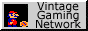

|
|
The Scene Portal - The Emulation Scene |
|
To make a long story short, emulation is the act of having one computer behave as another. For clarification; Wintels (PC's), Macs, video game consoles, calculators, and arcade machines all qualify as computers. This means that a computer can run the same software with the same appearance as the original hardware. This also allows a computer to use its own hardware to emulate the hardware of the original. This hardware includes keyboards, joysticks, monitors, speakers, and disk drives. Naturally, a computer must be technologically superior to the hardware that it attempts to emulate
Text taken from 'The Video Game & Emulation Emporium (Emulation Introduction)'
|
|

|
Vintage Gaming Network -
| One of the most popular emulation news sites active today
|
|
|
Arcade@Home -
| An extensive arcade and console news, roms, and resources
|

|
EP Emulation Portal -
| A large emulation portal with over 350 related links
|
The Emulation Scene - Multiple Arcade Machine Emulator
The Emulation Scene - News and Resources
Classic Gaming - Gaming the way you remember it
Retro Games - Your one stop emulation site
Backyard Emulation Links - Arcade, console and computer emulation links
Beyond Emulation - News, resources, interviews for console/arcade
Brian's Emulation Page - Resources on Mame/console
Darkmazda's Domain - News and resources for all emulators
EmuCamp - News and resources on consoles
Emulation Expirence - News and stuff
Emulation HQ - Massive news site on all things emulation
Emulators Unlimited - Large news resource on all things emulation
EmuX - Very commercial emulation news site
JoseQ's EmuViews - Massive emulation source with news, roms, emulators, chat, interviews and the like for many systems
Monroe World - Classic gaming portal and home of Retrogaming Radio
RPG Zone - Lots of emulators, RPG roms, walkthroughs, screenShots, FAQ's, help, news, translations, release dates, & save games!
SYS2064 - Arcade emulation galore
Ultimate News And Emulators - News and Resources for arcade/consoles
Wackers Arcade Page - News on latest arcade emulators
Zophar's Domain! - News and resources for many operating system's emulators
The Emulation Scene - Technical Resources
The Emulation Scene - Roms
The Emulation Scene - Computer Emulation
Multi Emulator Super System
M.E.S.S. - A free emulator which emulates a large variety of different systems
Amiga
The Fellow Project - A windows emulator which is considered very fast
UAE - is a mostly complete software emulation of the hardware of the Commodore Amiga 500/1000/2000. A Commodore Amiga, for those who don't know, is a 16/32 bit computer system based on the Motorola 680x0 CPU and a few specially designed custom chips that provide very good graphics and sound capabilities
DosUAE - DOS port
WinUAE - Windows port
MacUAE - Power Macintosh port
BeUAE - BeOS port
Amstrad
Caprice 32 - Software simulating hardware
CPCE - CPC emulator for DOS
NO$CPC - simply the fastest CPC emulation ever, integrated hi-end debugger with breakpoints, online assembler, various keyboard drivers, popup-menues, full mouse control, supports arj/pkzip archievated DSK-files, full adlib sound support, video mode/color splitting, joystick support, disk copy protection emulation
WinAPE32 - The windows Amstrad Plus Emulator
Apple II
Apple II Oasis for Windows - Emulates 128K+ //e, all video modes, 65c02 and Z80 microprocessors, Apple II speaker, Disk II and Hard disk images, realtime clock, serial interface, peripheral card swapping, etc
Appler - A DOS-hosted Apple ][ Emulator, written entirely in 386 Assembler
XGS/32 - XGS/32 is a windows-based Apple IIgs Emulator, based on the original XGS core
Atari 8bit
Atari800Win - A freeware Atari 8-bit computer emulator for Win9x/NT
Xformer 2000 - Runs your Atari 400/800, 800XL and 130XE for DOS, Windows (9x,NT,2000) and OS/2
Rainbow - Is the Atari 8-Bit Emulator for the Apple Mac and Windows 95/98/NT with Direct X, it offers very faithful emulation both graphics and sound
Atari 16/32bit
Echo - An Atari ST emulator for DOS
Pacifist - One of the best Atari ST emulators for DOS
TosBox - A system-level Atari ST emulator for DOS
Winston - An Atari ST emulator for Windows 9x/NT
Commodore 64
C64S - A commercial emulator for DOS
CCS64 - CCS64 is a Commdore 64 Emulator for PC and also in the future other platforms
Versatile Commodore Emulator (VICE) - Is a Versatile Commodore Emulator, i.e. a program that runs on a Unix, MS-DOS, Win95/NT, OS/2 or RiscOS machine and executes programs intended for the old 8-bit Commodore computers. The current version emulates the C64, the C128 (80 column screen is included now), the VIC20, all the PET models (except the SuperPET 9000, which is out of line anyway) and the CBM-II (aka C610)
Frodo - The free portable C64 emulator for BeOS, Unix, MacOS, AmigaOS, RiscOS, Windows, EPOC
Come Back 64 - Come Back 64 is a software emulator for the Commodore 64 Computer running on various platforms
MSX
BRMSX - BRMSX will be the fastest and most accurate MSX emulator ever. To assure that, BRMSX is all written in 32-bit assembly, there will be not a single line of C code in this emulator
RuMSX - RuMSX is a MSX-emulator for the Win32-platform that emulates the MSX1, MSX2, MSX2+ and the Turbo R
fMSX - Is a portable emulator of MSX/MSX2/MSX2+ home computers, written in C. Because of its portability, fMSX runs on many different systems including Unix, MacOS, AmigaOS, MSDOS, and Windows
NO$MSX - A fast DOS and Windows MSX emulator
RuMSX Turbo-R - A fast Windows 32 emulator
Macintosh
Basilisk - An Open Source 68k Mac emulator for BeOS, Unix, AmigaOS and Windows
ARDI - A commercial emulator for Windows 3.1/9x/NT/2000, DOS and OS
Fusion - A commercial emulator of PCs
VirtualMac - A commercial program running Mac software on Windows
The vMac Project - A emulator that currently emulates a Motorola 68000 based Apple Macintosh Plus on Windows, DOS Unix, OS/2 and NeXT
PC98
Anex86 - A EPSON PC-286/PC-386/PC-486/PC-586 emulator for Windows
PC98E - A PC-98x1 emulator for Linux/x86, FreeBSD and Windows
Spectrum
R80 - A Spectrum 16k, 48k, 128k, +2 ,+2A, Pentagon 128 and Scorpion 256 emulator
Spec256
X128 - A spectrum emulator for DOS
Z80 Stealth - A spectrum emulator
ZX Plus - ZX Plus is a Sinclair ZX Spectrum 48K and 128K emulator written for Windows 95 / 98 using Direct X
Tandy
Tandem - Tandy Personal Computer emulator
The Emulation Scene - Console Emulation
Multi Emulator Super System
M.E.S.S. - A free emulator which emulates a large variety of different systems
DarcNES
DarcNES - A a multi-system emulator for DOS, Windows, Amiga, BeOS and Unix that currently emulates the Sega Master System, Sega Game Gear, NES, ColecoVision, Turbo Grafix 16 with CD Emulation and the Apple II
Atari 2600
PC Atari Emulator - Atari 2600 emulator for DOS
Stella - A multi-platform Atari 2600 VCS emulator fpr Acorn, Amiga, DOS, FreeBSD, IRX, Linux, OS/2, MACOS, OpenStep, Unix and Windows
StellaX - The Atari 2600 emulator for Window 9x/NT/2000
z26 - An emulator for DOS/Windows 95
Atari 5200
Atari800WIN - A freeware Atari 8bit computer emulator for Win9x/NT
Rainbow - An Atari 5200 emulator for Windows 9x/NT and Apple Mac
Virtual Super System - VSS is an Atari 5200 Super System emulator for MSDOS
Atari 7800
M.E.S.S. - A free emulator which emulates a large variety of different systems including the Atari 7800
Coleco
ADAMEm - A portable Coleco ADAM and ColecoVision emulator for Windows and DOS
ColEm-DOS - A Coleco emulator for DOS and Macintosh
The Virtual ColecoVision - A ColecoVision emulator for Windows 95, Windows NT 4.0, and the Java Virtual Machine
Intellivision
Intellivision Lives! - A free emulator for the PC and Mac
Nintendo Entertainment System (NES)/Famicom
DarcNES - A a multi-system emulator for DOS, Windows, Amiga, BeOS and Unix that currently emulates the Sega Master System, Sega Game Gear, NES, ColecoVision, Turbo Grafix 16 with CD Emulation and the Apple II
DreamNes DX - A NES emulator for DOS
FwNES98 - A DOS/Windows NES/Famicom emulator
Jnes - A NES emulator for Windows32
NESten - A NES emulator for Windows 9x/2000
NESticle - A NES emulator for DOS/Win9x
Pretendo - A NES flexible NES emulator for Windows 9x/NT/2000, BeOS and Linux
RockNES - A NES emulator for DOS/Windows
SNK NeoGeo
MAME - Multiple Arcade Machine Emulator that also emulates NeoGeo
NeoGeo CD Emulator - A NeoGeo CD emulator for DOS
NeoRAGE - A NeoGeo emulator for DOS and Windows
Nintendo 64
Corn - A N64 emulator for Windows
Nemu64 - A N64 emulator for Windows
UltraHLE - Ultra64 High Level Emulator for Windows
TrueReality - A multi-platform N64 emulator for Unix, Windows, Windows w/ OpenGL and MacOS
NEC PC Engine/Turbo Graphx 16/Core-GraphX
HU-GO! - A PCE/TG/CG for DOS and linux
Magic Engine - A PCE/TG for DOS, Win9x/NT and MacOS
Sega Master System/SG1000/SC3000
BrSMS - An emulator for DOS
Meka - A shareware emulator for DOS
Massage - A freeware emulator for DOS
Sega Megadrive/Genesis
DGen - A free Genesis/Megadrive emulator for Windows 95/98/2000 (and possibly NT) running under DirectX
Virutal Genesis - A DOS based emulator for the Sega Genesis, it is written in C and Assembler using Djgpp and Nasm
Genecyst - A Genesis emulator for DOS
Sega 32X
AGES - A Sega Genesis/32X emulator for Windows
Sony Playstation/PSX
AdriPSX - A free emulator for DOS and Windows
bleem! - A commercial emulator for DOS and the Sega Dreamcast
Virtual Game Station - A commercial emulator for Windows and MacOS
Super Nintendo Entertainment System (SNES)/SuperFamicom
SNEmul - A DOS and Linux emulator and SPC ripper
Snes9x - A freeware, very portable emulator for Solaris, Linux, Windows, DOS, BeOS, SunOS, Solaris, FreeBSD, RiscOS, Amiga, N64, OpenBSD and Irix
ZSNES - An 100% assembler emulator for DOS and Windows
Vectrex
DOS Vectrex Emulator
The Emulation Scene - Handheld Emulation
Nintendo Gameboy/Super Gameboy/Gameboy Color
Boycott - An emulator for Windows/DOS/Unix/Macintosh
GameBoy 98 - An Gameboy/Gameboy Color emulator for DOS
HelloGB - An GB/SGB/GBC emulator for Windows
VGB - For DOS, X11, Unix/Linux
Nintendo Virtual Boy
Reality Boy - For Windows and Linux
Virtual E - For Windows, OpenGL, Linux, Aix and DOS
Sega Game Gear
BrSMS - An emulator for DOS
Meka - A shareware emulator for DOS
Massage - A freeware emulator for DOS
Atari Lynx
Handy - A Free emulator for Windows9x/NT/2000, Macintosh, Linux, Amiga and Acorn
NeoGeo Pocket
Rape? - For Windows 9x
The Emulation Scene - Arcade Emulation
Juno First - (Discontinued)
Sparcade - Is a multi-game arcade emulator with support for games based around the 6502, 6809, Z80, 8086 or 68000 processors. Unlike many other emulators, Sparcade's core is 100% assembly language, providing true arcade speed and smoothness even on low-specced machines
HiVE (High Velocity Emulator) - HiVE is a Win32 program which emulates classic arcade games such as Galaga and PacMan. This project was formerly know as CAGE (Classic Arcade Game Emulator)
Retrocade - Retrocade is a high-performance arcade emulation program that emulates a large number of classic arcade games from the late 1970's and the 1980's
Callus - Callus is a Capcom Arcade Emulator released in 1998 It runs many of the classic Capcom games like Final Fight and Street Fighter 2
Raine - (Discontinued) Emulates some M68000 and M68020 arcade games and is mainly focused on Taito and Jaleco games hardware
Rage (Real Arcade Game Emulator) - Our main goal is to emulate as many SNK and Capcom games as possible in our RAGE emulator, and as many NeoGeo games in our NeoRAGE emulator
System 16 Arcade Emulator - (Discontinued) Emulates the Sega's System 16/18 arcade boards and some extra dual 68000 boards like Out Run, Space Harrier and Hang-On series
|